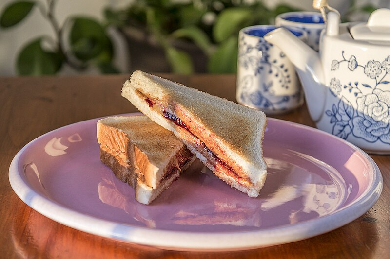

Home
Peanut Butter and Jelly Sandwich

Description
A peanut butter and jelly sandwich (PB&J) consists of peanut butter and fruit preserves spread on bread. The sandwich is popular in the United States, especially among children.
Ingredients
- Bread
- Peanut butter
- Jelly or jam
Steps
- Take two slices of bread.
- On one slice, spread peanut butter.
- On the other slice, spread jelly or jam.
- Combine the two slices making sure the sides with spreads are facing each other.